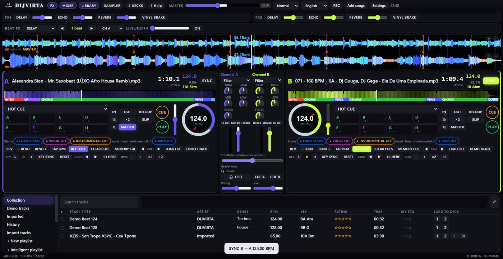

DIJVIRTA
DJ ծրագիր Windows-ի համար՝ մաքուր միքսի համար
Չորս դեկ, ճշգրիտ BEAT SYNC, RGB ալիքներ, Beat FX ու Pad FX, sampler և պանակներով գրադարան։ Միացրու քո DJ պուլտը ու սկսիր նվագել։
Ծրագիրը
Ամեն ինչ մեկ էկրանին
Ալիքները վերևում, դեկերն ու միքսերը մեջտեղում, գրադարանը ներքևում։ Կոմպակտ դասավորություն, որ աշխատի նաև նոութբուքի էկրանին։

4դեկ՝ A, B, C, D
12pad ռեժիմ
16sampler սլոտ
18Beat FX էֆեկտ
Հնարավորություններ
Այն, ինչ պետք է DJ-ին
Ալիքներ ու վերլուծություն
Էֆեկտներ ու պադեր
Գրադարան ու պուլտ
Թեստ
Փորձիր DIJVIRTA-ն հենց բրաուզերում
Ամբողջական ծրագիրը 10 րոպեով։ Նվագիր դեմո երգերը կամ բեռնիր քո ֆայլերը, միացրու MIDI պուլտը Chrome-ում կամ Edge-ում։
Թեստը սկսվում է առաջին բացելուց և տևում է 10 րոպե։ Նոր թեստ՝ 24 ժամից։
Ներբեռնել
Տեղադրիր երեք քայլով
Ներբեռնիր
Սեղմիր ներքևի կոճակը և պահիր DIJVIRTA-Setup.exe ֆայլը։
Տեղադրիր
Բացիր ֆայլը և սեղմիր Install։ Ծրագիրը կավելանա Start մենյու և աշխատասեղան։
Միացրու պուլտը
Միացրու DJ պուլտը USB-ով և բացիր DIJVIRTA-ն։ Պուլտը կճանաչվի ինքնաշխատ։